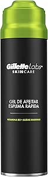
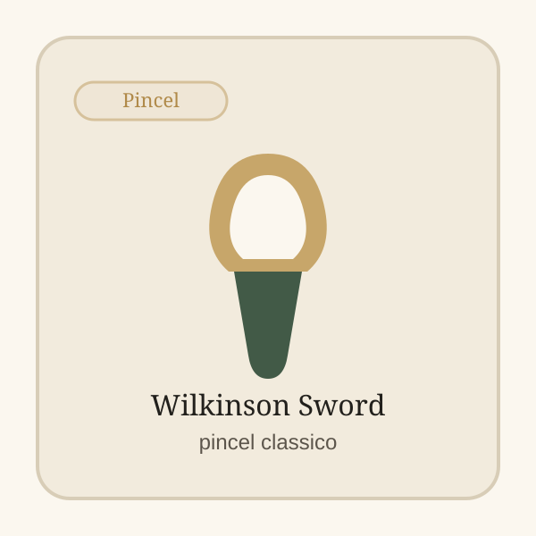

Creme de Barbear Proraso
Creme clássico para barbear húmido com foco em conforto.
Gel prático para barbear rápido com boa sensação de conforto. Ideal para quem quer reduzir tempo sem complicar.

Destacamos este produto pelo equilíbrio entre uso real, procura e feedback de compradores para te ajudar a decidir mais depressa.
Gel prático para barbear rápido com boa sensação de conforto.
Ideal para quem quer reduzir tempo sem complicar.
Confirma disponibilidade e avança para a compra com entrega rápida e pagamento seguro na plataforma.
Creme clássico para barbear húmido com foco em conforto.

Pré-barba pensado para preparar pele sensível antes da lâmina.

Pincel classico para montar espuma e reforcar uma rotina de barbear mais tradicional.
Artigos ligados ao mesmo tema para continuares a explorar.
Importa perceber onde o processo está a criar fricção desnecessária.